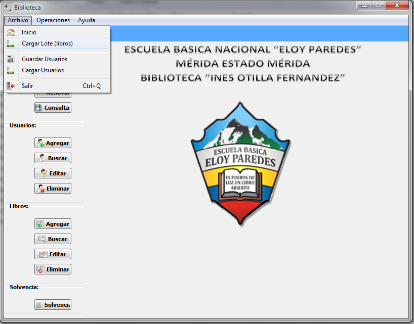
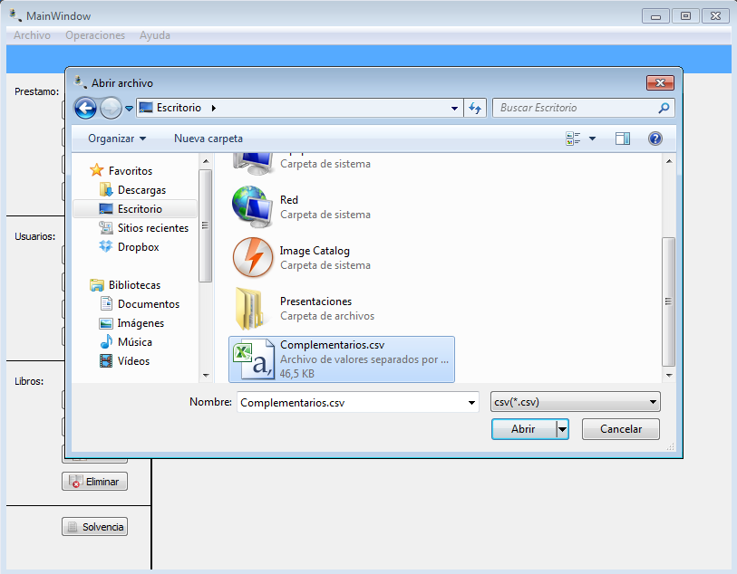
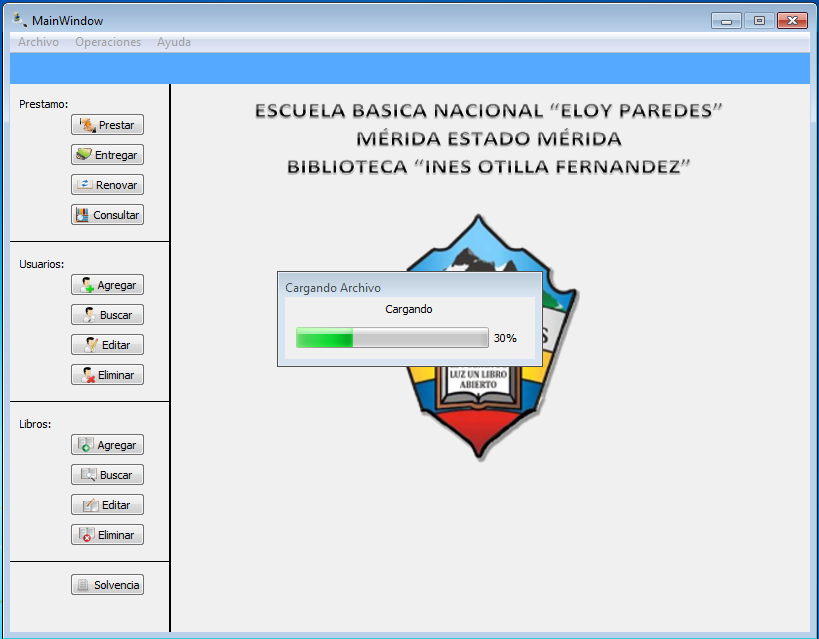

Para realizar la operación de cargar libro por lote existe una forma de realizar dicha operación:
Figura: Menu Archivo

Una vez seleccionada la opción de cargar lote, se debe seleccionar el archivo con extensión .csv, vea ¿Cómo crear archivo extensión csv?. La siguiente figura muestra la selección de un archivo con extensión .csv.

Una vez seleccionado el archivo que se desea cargar por lote de libros, aparecera una ventana como se muestra en la siguiente figura que muestra el proceso de cargar del archivo. Una vez finalizado la carga del archivo, los libros estarán cargado satifactoriamente al sistema.
